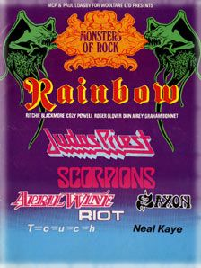
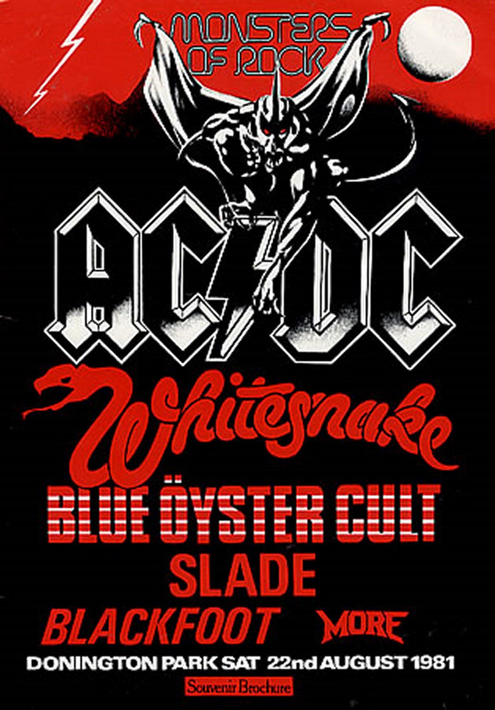
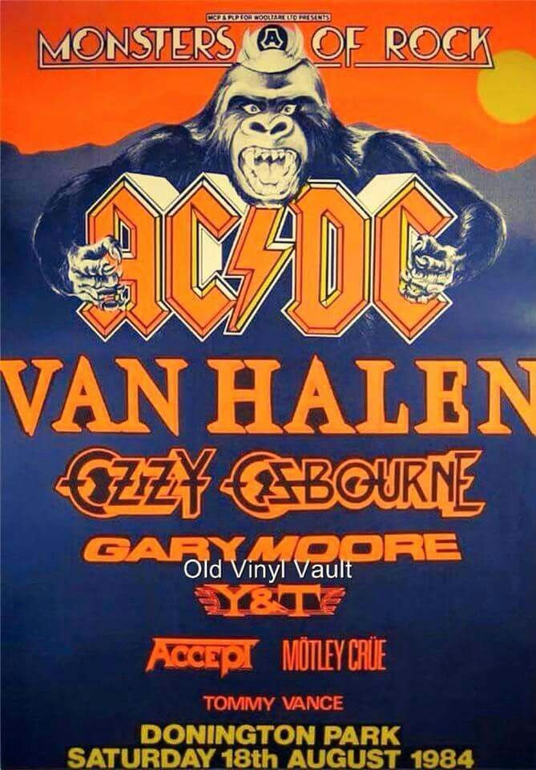

Как един ден през 1980 г. промени музикалните фестивали завинаги

Кал. Кървава кал навсякъде. Това е трайният спомен от първия по рода си фестивал Monsters Of Rock през 1980 г.
Всъщност това ще се превърне в един от митовете за фестивала.
„Всички смятат, че в Донингтън винаги е мокро“
би казал промоутърът Морис Джоунс няколко години след първото събитие.„Но това не е вярно. Мога да ви покажа подробности за времето за всяка година и през повечето случаи е слънчево "
Но на 16 август, датата на този дебютен фестивал в замъка Донингтън в средните земи, калта се залепи не само за ботушите, но и за всяка част от анатомията.
И все пак на никой не му пукаше. Факт беше, че там имаше шанс да отпразнуваме една грандиозна година за хард рокът и метъла.
Замислен от Джоунс и Пол Лоасби като начин за сигнализиране на края на турнето на Rainbow-Down To Earth, всъщност това не е трябвало да бъде раждането на династия,а само еднократен ден.
Но беше толкова добре приет, Monsters Of Rock се превърна в традиция, доминираща през 80-те.
Първият законопроект представлявал превъзходно сечение на групи от Великобритания, Европа и Северна Америка.
Неизбежно Rainbow били звездната атракция, но Judas Priest, Scorpions и Saxon дали на деня дълбочина в тежка категория,
докато April Wine, Riot и Touch добавили трансатлантически блясък.
Разбира се, денят също бил запомнен с Дъг Хауърд, басиста на Touch, които имали отличието да бъде първата група,
която някога е свирила на фестивала, той погълнал пчела веднага след завършването на сета им.„Трябваше да бъда спешно откаран в болница - каза той за инцидента, - защото имах алергична реакция към ужилването от пчела. Влетя в отворена бутилка бира. Сега хората смятат, че е смешно, но можеже да има сериозни последици за мен. "
През 1981 г., след като решили, че техният еднократен експеримент е триумф, Джоунс и Лоасби решават да направят второ събитие в Донингтън, което е най-известно като моторно състезание.Всъщност това било раждането на идеята за това което сега се възприема като ежегоден фестивал. Благодарение на връзката на Джоунс с AC / DC, те бяха назначени да бъдат глвавни, гарантирайки по-големи продажби на билети, отколкото през 1980 г.

Проведен на 22 август, законопроектът включвал и Whitesnake, Blue Oyster Cult, Slade, Blackfoot и NWOBHM.
Оформлението на територията през 1981 г. било по-добро от предходната година, като феновете трябвало да правят по-малко разходки из територията,
за да стигнат до храна, алкохол и мърчандайзинг. Но докато повечето от групите се представили перфектно,
както се очаквало - това било сметаната на световната заета рок-култура - Blue Öyster Cult която показа ужасно изпълнение.
Те обвинили за това факта, че барабанистът Алберт Бушар се е отказал само ден или нещо преди фестивала, принуждавайки BOC да вкара барабаниста Rick Downey.
Тъмното им настроение не се облекчило, когато им била представена възпоменателна плоча зад кулисите,
а фронтменът Ерик Блум бил толкова разгневен, че хвърлил нещастния предмет на земята и го нагазил.
След впечатляващите състави през 1980 и 81 г., третата година била малко разочароваща.
На Status Quо по някакъв начин им липсвала теглителната сила на техните предшественици, а останалата част от състава, включваща Гилън, Хоуквинд и Uriah Heep, не успяват да направят очакваното въздействие.
Дори присъствието на Saxon, първата група, която се появила два пъти на фестивала, и канадските Anvil не били достатъчни, за да накарат всички да си губят устните на празника.Но нещата получили добре дошъл тласък през 1983 г., когато Whitesnake се завръща като водеща група, заедно с ZZ Top, Twisted Sister и Dio. И все пак главите били разклатени в объркване, тъй като Meat Loaf бил избран да бъде втори в програмата. Но той бил предизвикателен, преди да се появи:
„Ще ги разтърся всички и ще покажа, че заслужавам уважението на феновете!“
Е, той е бил отсвиркан с бутилки, но не толкова зле, колкото много се били страхували. Всъщност хвърлянето на бутилки на сцената се превърнало в традиция на Monsters Of Rock. Феновете се събирали от рано сутринта, пиели обилно и след това пикали в пластмасови бутилки, преди да ги хвърлят на сцената. Рядко било знак за неодобрение на онзи, който свирел по това време, по-любопитно извращение от пляскане на плажни топки на брега на морето!

Но ако 1982/3 и фестивалът е бил малко сдържан, тогава 1984 г. е била предопределено да бъде запомнена като може би най-добрата година на Monsters Of Rock от всички.
AC / DC се завръщат като водещи, а Ван Хален - по онова време, може би най-голямата рок група от всички - е втори в програмата.
Останалата част от състава била също толкова звездна: Ozzy, Gary Moore, Y&T, Accept и Mötley Crüe.
Това бил голям ден в митологията на рок и метъл музиката. Басистът на Crüe Nikki Sixx завършва програмата на групата, като хвърля инструмента си в тълпата,
а групата която била надрусана- прекарала останалото време в тероризиране на хора, като тичала наоколо, опитвайки се да ги ухапе по ръката.
Очаквало се много от Y&T, но те напълно присвоиха тяхната програма и вместо да доставят химн след химн, публиката получила няколко скучни и сухи сола.
Дейвид Лий Рот направил всичко възможно, за да бие по викове AC / DC, като направил разгряващата си калистеника пред мобилната си гримьорна с гето-бластер с пълна сила, докато хедлайнерите правеили своята снимка наблизо.
Идеята беила да разсее всички, но всичко, което успял, било да досажда на хората.
И когато лотариосът от Лос Анджелис излязъл на сцената, това било огромно разочарование.
Това би трябвало да бъде последната му изява на британска сцена с Ван Хален, Даймънд Дейв загубил блясъка си.
AC / DC става първата група, която два пъти е хедлайнер на Monsters Of Rock, и няма аналог.
С поглед назад, може би 1984 г. не била толкова невероятна, както всички сега твърдим, че си спомняме.
Но този състав повдигна Monsters Of Rock до точката, в която се смята за най-известния рок фестивал в света.
AC / DC направили третият и четвъртият си хедлайн през 1991 г., като Metallica и Mötley Crüe се завърнали, заедно с Queensrÿche и The Black Crowes.
Но шумът, който винаги чувствали през 80-те, бил драстично намален.
Факт било, че фестивалът се възприемал като отминала епоха и това било показано от начина, по който рокът се възстанови.
Никой от младата гръндж бригада не искал да има нещо общо с Monsters Of Rock и ставало все по-трудно да се привлекат правилните банди.През септември 1991 г., само няколко дни след неуспеха на августовския преврат, 1,6 милиона фенове на рок музиката се събрали в Москва, за да се насладят на първия рок концерт на открито, като част от поредицата Monsters of Rock. Това е бил първият концерт някога бил е част от 1991 European Tour Monsters of Rock и бил добавен в последния момент по молба на Борис Елцин. Ларс Улрих от Metallica си спомня за концерта тогава:
"Помня как ни стовариха от автобуса и навсякъде имаше военни и летяха вертолети в небето също военни първите ми думи бяха къде попаднах. Когато шоуто беше в разгара си видях как военните които трябваше да поддържат тълпата кротка започнаха да се кефят заедно с нея и забравиха че са охрана"
Този концерт се запомнил като един от най-големите концерти правен някога в рок историята видеа показват откачената публика която полудява по време на изпълненията им въпреки че имало 1000 военни които поддържали порядъкът по време на шоуто.
1991 Moscow Monsters Of Rock band list
| AC/DC | 1 |
|---|---|
| Metallica | 1 |
| The Black Crowes | 1 |
| Pantera | 1 |
"По-рано мечтаех да играя тук", казва Робърт Флин от Machine Head през 1995 г. "Да получиш шанса да го направиш е изпълнение на амбиция."
Monsters Of Rock беше феномен от 80-те. Той зададе шаблона за безбройните фестивали, които се случват всяка година по целия свят. Но никой не може да се сравни с оригинала.